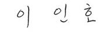

CEO
국민과 고객에게 신뢰받는
무역 · 투자 · 금융 안전망으로 거듭나겠습니다.
안녕하십니까?한국무역보험공사 (K-SURE)
사장 이인호입니다.
1992년 설립된 한국무역보험공사는 무역보험을 운영하는 정책금융기관으로 수출, 수입 등
대외거래 위험을 담보하여 무역과 해외투자를 촉진함으로써 국가 경쟁력 강화와 국민경제
발전에 기여해왔습니다.
앞으로도 우리 기업이 격변하는 대외 환경에 유연히 대응하고 세계 시장을 무대로
글로벌 경쟁력을 갖출 수 있도록 항상 준비된 자세로 업무에 임하겠습니다
우선, 우리나라 수출구조 혁신에 앞장서겠습니다.
유망한 신시장 개척으로 수출 전선을 넓히고, 경쟁력 있는 신산업
육성으로 미래 먹거리를 창출하겠습니다.
수출 중소 · 중견기업의 힘이 되겠습니다.
세계 시장에서 통하는 수출경쟁력을 갖출 수 있도록 맞춤형 프로
그램을 마련하여 기업의 체감도를 높이겠습니다.
고객의 시선에서 무역보험을 바꾸겠습니다.
고객의 가치를 높이는 무역보험으로 진화할 수 있도록 다양한
목소리에 귀 기울이겠습니다.
사회적 가치 실현을 선도하겠습니다.
더불어 살아가는 공동체의 일원으로서 즐거움은 더하고 어려움은
나눌 수 있는 함께 살아가는 문화를 만들겠습니다.
한국무역보험공사는 국민과 고객에게 신뢰받는 무역·투자·금융
안전망으로서
우리나라가 세계적인 무역 강국으로 한 단계 더 도약할 수 있도록 흔들림 없이 뒷받침하겠습니다.
우리나라가 세계적인 무역 강국으로 한 단계 더 도약할 수 있도록 흔들림 없이 뒷받침하겠습니다.
여러분의 따듯한 응원과 격려를 부탁드립니다.
감사합니다.
한국무역보험공사 사장
